Matte Glaze
Random material mixes that melt well overwhelmingly want to be glossy, creating a matte glaze that is also functional is not an easy task.
Key phrases linking here: matte glaze - Learn more
Details
A glaze that is not glossy. Of course, unmelted glazes will not be glossy, but to be a true matte a glaze must be melted and still not glossy. To be a functional matte it must also resist cultery marking, clean well and not leach into food and drink. Thus it is not easy to make a good matte glaze. It is common to see poor quality matte surfaces on name-brand table ware sold in major stores. It is even more common on hobby-made or potter-made ware.
The vast majority of random material mixes that melt well want to be glossy. Matteness can be a product of the physical or mineral form of a material used, the chemistry and selection of materials to source that chemistry and often the firing schedule. While some types of mattes are stable, with others it can be difficult to maintain the same fired texture through material and firing variations. The best mattes are those whose mechanism is understood and have an adjuster. For example, adjusting the cooling speed of the firing is almost certain to affect the degree of matteness. Or, adjusting the percentage of a material whose chemistry is pivotal to the matting mechanism. Or switching one frit for another. Or simply blending proportions of glossy and matte slurries to target a specific degree of matteness.
The visual character of mattes, even those within the same mechanism, varies widely and is often difficult to characterize. Matteness is often part of a larger visual character that involves color and variegation. An advantage of matte surfaces is that they do not show fingerprints with bright or dark colors.
Mechanisms that produce matte glazes produce surfaces that scatter light:
-Micro crystalline surfaces. High CaO glazes, for example, form minute calcium silicate crystals when cooling (at normal cooling rates). Wollastonite especially can do this, but also other sources of CaO. Another oxide that crystallizes well if oversupplied is ZnO, the size of the crystal being determined by the rate of cooling and level of ZnO.
-Micro-wavy or rippled (non flat) surfaces can be produced multiple ways. High Al2O3 (if supplied in a form that can decompose to enable Al2O3 to enter the melt), for example, stiffens the melt preventing level-out during cooling. Glaze melts that contain multiple melt phases solidify in a non-homogeneous way to produce a glass that both scatters light from within and from its surface.
-A special case of micro-rippled surfaces is MgO. It is a very effective matting agent at both high and middle temperatures. Talc and dolomite source the MgO to create this effect (although can differ in appearance). MgO has a high surface tension. In higher temperatures the MgO creates multiple phases in the melt that have different fluidity and refractive indexes. These are some times called 'silky mattes' and are pleasant to the touch. Amazingly MgO can produce this effect at middle temperatures even though it is not an active melter there (B2O3 assumes that role). Levels of about 0.35 MgO or higher can produce very pleasant matte surfaces that do not cutlery mark and glazes that do not craze (because of the low expansion of MgO).
-Crowbar method! Materials whose individual particles are so refractory that they simply do not dissolve in the melt, if added judiciously to the right base, can produce a workable matte. Magnesium carbonate is an example. Even calcium carbonate, if supplied in raw form, does not melt at lower temperatures and can thus matte a glaze. But the best example is calcined alumina, if used in sufficiently fine particle size, can matte a glaze even with a small addition. However, alumina hydrate, by contrast requires a much greater addition. Why? It enters the chemistry of the melt and imparts a true alumina matte, the latter just increases the melting temperature because it is so refractory.
-Mechanisms that are not well understood. An example is barium mattes. Although they appear to be crystallized, some have found that no matter how fast they are cooled they still have the same degree of matteness. At the same time, fritted forms of the same amount of barium do not matte! In this system it appears the carbonate form supplies the BaO and seeds the crystals.
Employing combinations of these mechanisms is normally not practical because they can conflict. For example, a crystal matte is based on a highly fluid, well melting glaze, whereas an alumina matte is the opposite. However an exception to this is magnesia mattes, they can occur where alumina is high and silica is low (the alumina matte mechanism, although MgO can matte glazes that also have low MgO).
Functional matte glazes can be more difficult to formulate (especially at middle and low temperatures) because they have a narrow window of chemistries or have recipes containing matting agents that are highly active (resulting in large changes in the degree matteness for small variations in the recipe or process). For crystal mattes, specific firing methods are also needed (e.g. slower cooling) and must be kept consistent. Also, the degree to which mattes do not level out completely on cooling determines how easy-to-clean the surface of the glass will be. Notwithstanding all of this, Al2O3 contributes to the hardness of fired glazes. Most matte glazes, by definition, have high Al2O3. Thus, if a specific matte melts well and does not cutlery mark, it could be among the most functional glazes available!
Companies generally configure their process to make the glaze as matte as possible while still having good technical properties (however some tolerate some cutlery marking). A semi-matte is a relaxing of the stringent requirements of the matte effect, a movement toward an easier-to-manufacture, more functional product. The semi-matte space is quite volatile, small chemistry changes, or even more important, firing changes, can produce large shifts in gloss of the fired glaze. Companies can measure the amount of semi-matteness by measuring the amount of reflected light from a glaze surface or comparison of surface micrographs.
Related Information
The reflection of light on a matte glaze
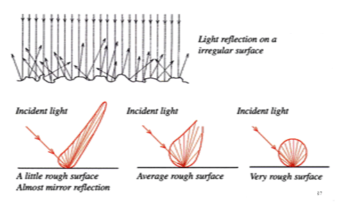
This picture has its own page with more detail, click here to see it.
A refined-material cone 10R dolomite matte (left) vs. one made using Ravenscrag Slip
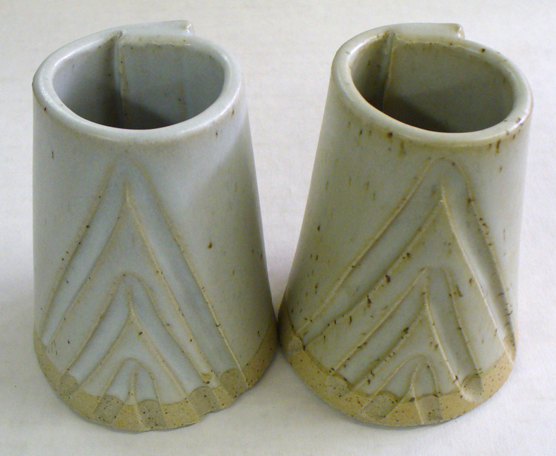
This picture has its own page with more detail, click here to see it.
GR10-J Ravenscrag silky matte (right) and G2571A matte (left) on a buff stoneware at cone 10R. Surfaces feel identical, the slightly darker color is due to iron content in the Ravenscrag. The former was formulated to mimic the latter using as much Ravenscrag Slip as possible yet still maintain the same chemistry.
A functional matte cone 6 glaze should melt as well as a glossy
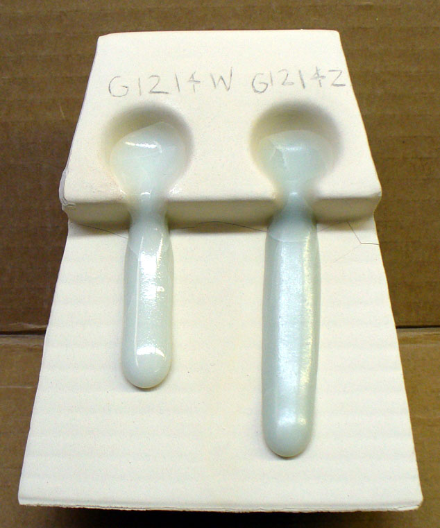
This picture has its own page with more detail, click here to see it.
True functional mattes have fluid melts, like glossy glazes. They need this in order to develop a hard, non-scratching, durable glass. The mechanism of the G1214Z1 matte on the right is high Al2O3, it is actually melting more than the glossy G1214W on the left (this was fired between cone 5 and 6, it normally runs right off the runway).
Before spending time trying online recipes, take a minute to do a sanity check on them
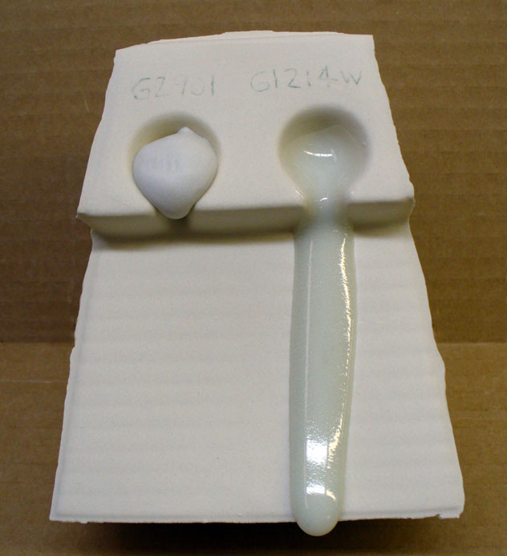
This picture has its own page with more detail, click here to see it.
This is a cone 6 GLFL test to compare melt-flow between a matte recipe, found online at a respected website, and a glaze we use often. Yes, it is matte. But why? Because it is not melted! Matte glazes used on functional surfaces need to melt well, they should flow like a glossy glaze. Even though this recipe has 40% nepheline syenite, lots of dolomite and calcium carbonate it is not melting. Yes, these are powerful fluxes, but at cone 10, not cone 6! To melt a cone 6 glaze boron, zinc or lithia are needed. Boron is the most common and best general-purpose melter for potters (it comes mainly in frits, Gerstley borate). The concept of a limit recipe applies here, the idea of eye-balling a recipe and quickly assessing if it is ridiculous or not.
How to matte Ravenscrag Slip at cone 10 by adding talc
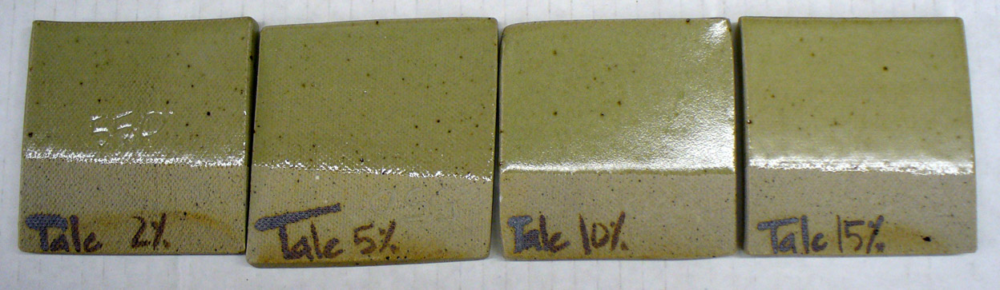
This picture has its own page with more detail, click here to see it.
2,5,10,15% talc added to Ravenscrag Slip on a buff stoneware fired at cone 10R. Matting begins at 10%. By Kat Valenzuela.
2, 5, 10 and 15% calcined alumina added to Ravenscrag Slip
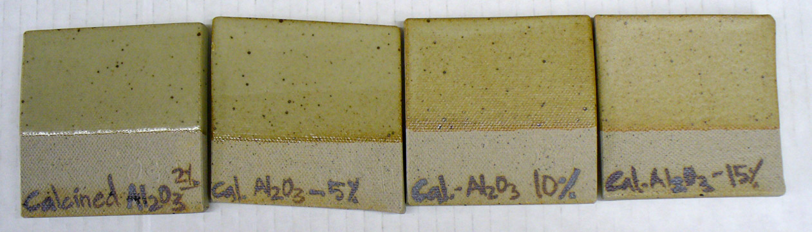
This picture has its own page with more detail, click here to see it.
The Ravenscag:Alumina mix was applied to a buff stoneware fired at cone 10R (by Kat Valenzuela). Matting begins at only 5% producing a very dry surface by 15%. This "psuedo matte" surface is simply a product of the refractory nature of the alumina as a material, it does not disassociate in the melt to yield its Al2O3 as an oxide (as would a feldspar, frit or clay). The same test using alumina hydrate demonstrates that it disassociates somewhat better (although not completely).
2, 5, 10, 15% dolomite added to Ravenscrag Slip at cone 10R
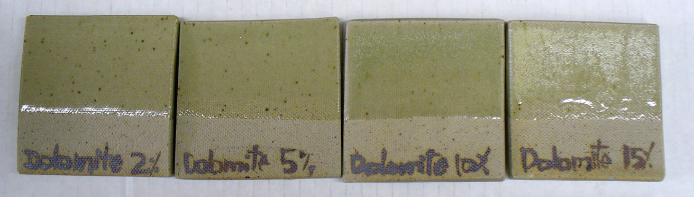
This picture has its own page with more detail, click here to see it.
This is a buff stoneware clay. Crystal development toward a dolomite matte begins at 15%. By Kat Valenzuela.
2, 5, 10 and 15% alumina hydrate added to Ravenscrag Slip
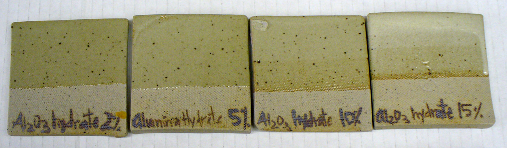
This picture has its own page with more detail, click here to see it.
Pure Ravenscrag Slip is glaze-like by itself (thus tolerating the alumina addition while still melting as a glaze). It was applied on a buff stoneware which was then fired at cone 10R (by Kat Valenzuela). This same test was done using equal additions of calcined alumina. The results suggest that the hydrated version is decomposing to yield some of its Al2O3, as an oxide, to the glaze melt. By 15% it is matting and producing a silky surface. However crazing also starts at 10%. The more Al2O3 added the lower the glaze expansion should be, so why is this happening? It appears that the disassociation is not complete, raw material remains to impose its high expansion.
How to turn a dolomite matte white glaze into a bamboo matte
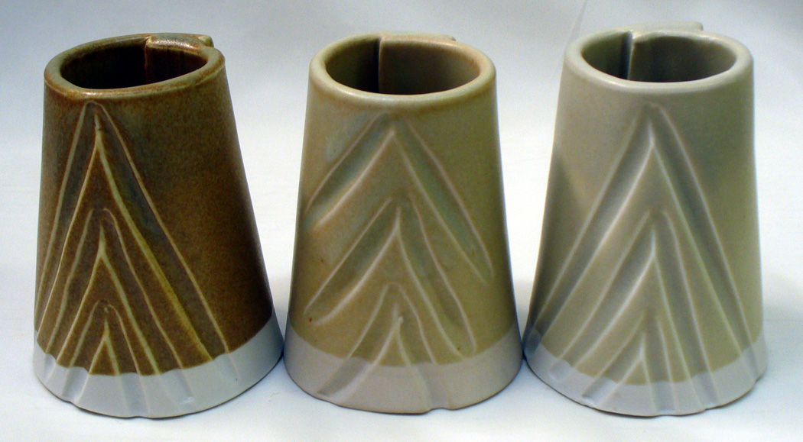
This picture has its own page with more detail, click here to see it.
Make cone 10R bamboo colors using the GR10-J Ravenscrag silky matte base recipe (right) and adding 1% iron (left), (0.5% centre). These samples are porcelain. This iron addition also works using the G2571A matte base recipe.
Comparing two glazes having different mechanisms for their matteness
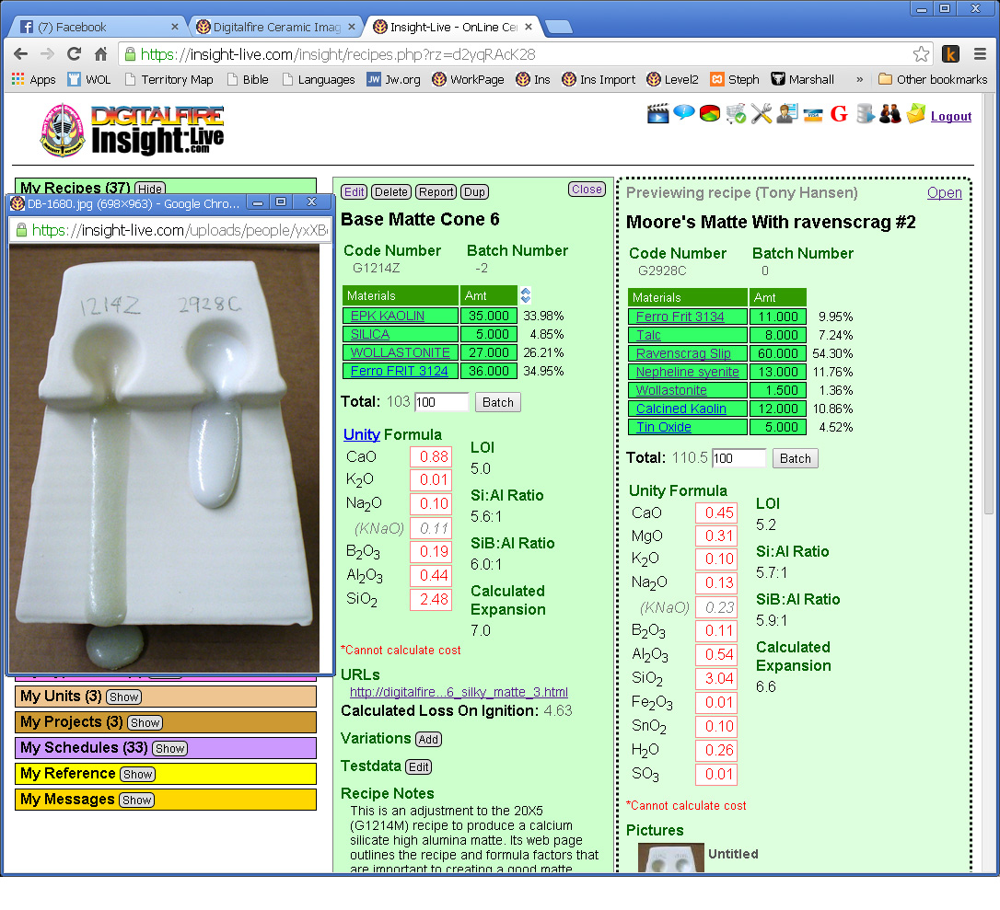
This picture has its own page with more detail, click here to see it.
These are two cone 6 matte glazes (shown side by side in an account at Insight-live). G1214Z is high calcium and a high silica:alumina ratio. It crystallizes during cooling to make the matte effect and the degree of matteness is adjustable by trimming the silica content (but notice how much it runs). The G2928C has high MgO and it produces the classic silky matte by micro-wrinkling the surface, its matteness is adjustable by trimming the calcined kaolin. CaO is a standard oxide that is in almost all glazes, 0.4 is not high for it. But you would never normally see more than 0.3 of MgO in a cone 6 glaze (if you do it will likely be unstable). The G2928C also has 5% tin, if that was not there it would be darker than the other one because Ravenscrag Slip has a little iron. This was made by recalculating the Moore's Matte recipe to use as much Ravenscrag Slip as possible yet keep the overall chemistry the same. This glaze actually has texture like a dolomite matte at cone 10R, it is great. And it has wonderful application properties. And it does not craze, on Plainsman M370 (it even survived a 300F-to-ice water IWCT test). This looks like it could be a great liner glaze.
A good matte glaze. A bad matte glaze.
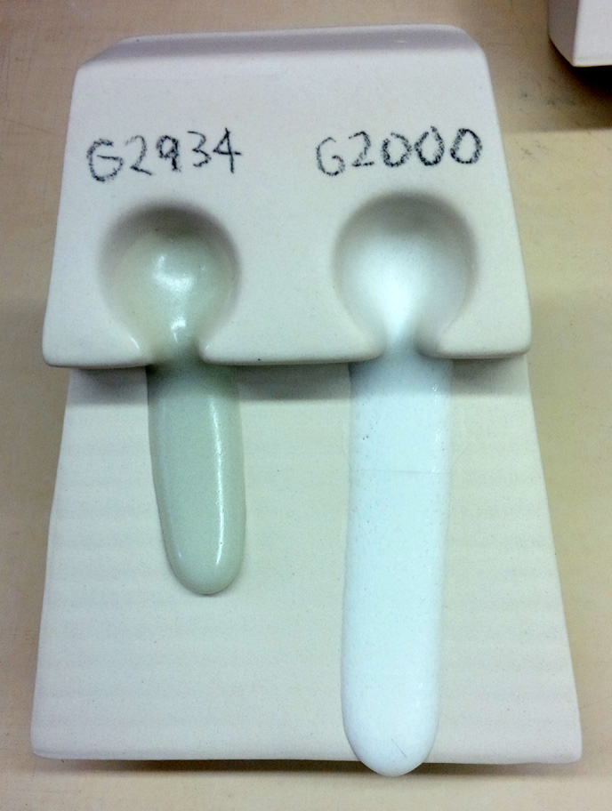
This picture has its own page with more detail, click here to see it.
A melt fluidity comparison between two cone 6 matte glazes. G2934 is an MgO saturated boron fluxed glaze that melts to the right degree, forms a good glass, has a low thermal expansion, resists leaching and does not cutlery mark. G2000 is a much-trafficked cone 6 recipe, it is fluxed by zinc to produce a surface mesh of micro-crystals that not only mattes but also opacifies the glaze. But it forms a poor glass, runs too much, cutlery marks badly, stains easily, crazes and is likely not food safe! The G2934 recipe is google-searchable and a good demonstration of how the high-MgO matte mechanism (from talc) creates a silky surface at cone 6 oxidation the same as it does at cone 10 reduction (from dolomite). However it does need a tin or zircon addition to be white.
Tuning the degree of gloss in a colored matte glaze
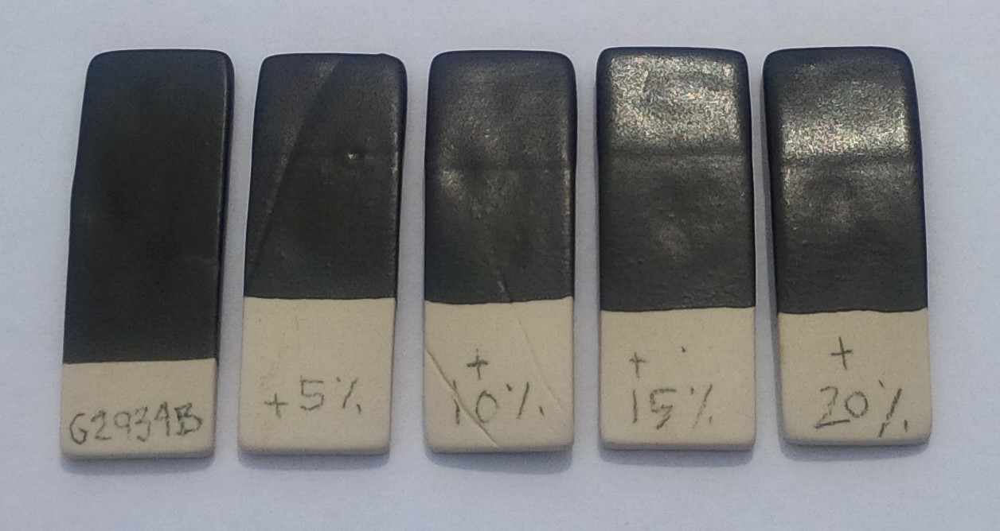
This picture has its own page with more detail, click here to see it.
Matte glazes have a fragile mechanism. That means the same recipe will be more matte for some people, more glossy for others (due to material, process and firing differences). In addition, certain colors will matte the base more and others will gloss it more. It is therefore critical for matte glaze recipes to have adjustability (a way to change the degree of gloss), both for circumstances and colors. This recipe is Plainsman G2934 base matte with 6% Mason 6600 black stain added. It has been formulated to be on the more matte side of the scale so that for most people a simple addition of G2926B (M370 transparent ultra clear base recipe) will increase the gloss. That means users need to be prepared to adjust each color of the matte to fine-tune its degree of gloss. Here you can see 5:95, 10:90, 15:85 and 20:80 blends of the matte:gloss recipe bases.
Partially and fully opacified cone 6 G1214Z1 matte glaze
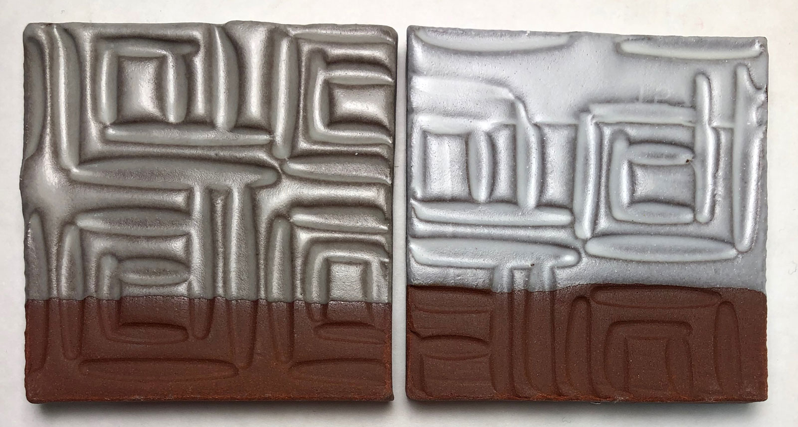
This picture has its own page with more detail, click here to see it.
This is the G1214Z1 calcia matte base (as opposed to the magnesia matte G2934). The clay is Plainsman M390. 5% Zircopax was added on the left (normally 10% or more is needed to get full opacity, the partially opaque effect highlight contours well). 5% tin oxide was added to the one on the right (tin is a more effective, albeit expensive opacifier in oxidation). The PLC6DS firing schedule was used.
Matte base glaze cutlery marks.
Add 10% glossy glaze. No marking.
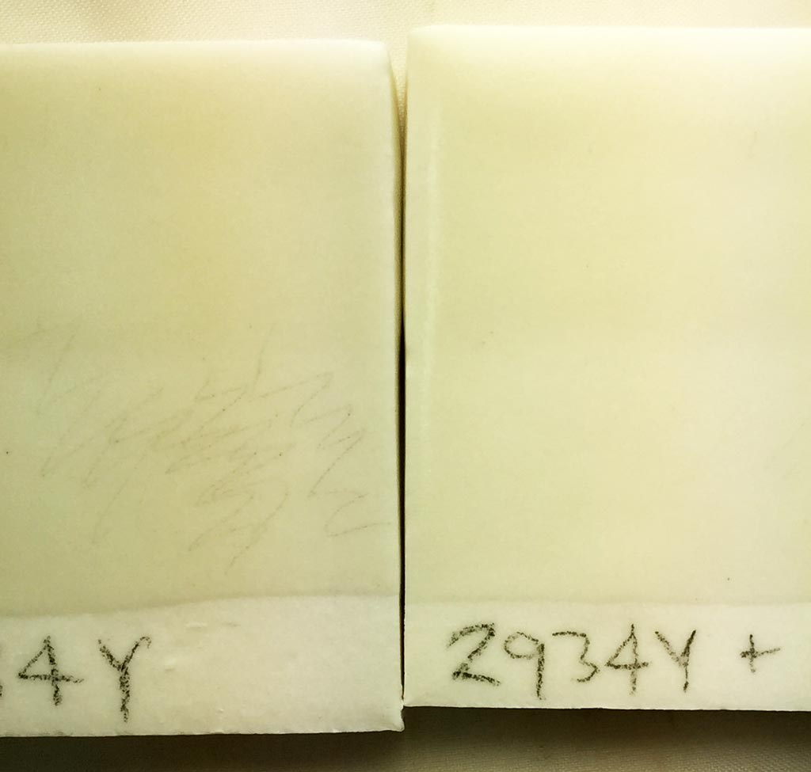
This picture has its own page with more detail, click here to see it.
This is G2934Y (a version of the G2934 cone 6 matte base recipe that supplies much of the MgO from a frit instead of dolomite). Like the original, it has a beautiful fine silky matte surface and feels like it would not cutlery mark. But, as you can see on the left, it does! The marks can be cleaned off easily. But still, this is not ideal. The degree of matteness that a glaze has is a product of its chemistry. But can we fix this without doing any chemistry? Yes. By blending in some G2926B clear glossy (90:10 proportions). The result: The marks are gone and the surface is only slightly less matte. This underscores the need to compromise the degree of matteness, on food surfaces, enough to avoid staining and cutlery marking.
Matte cone 6 glazes have identical chemistry but one melts more. Why?
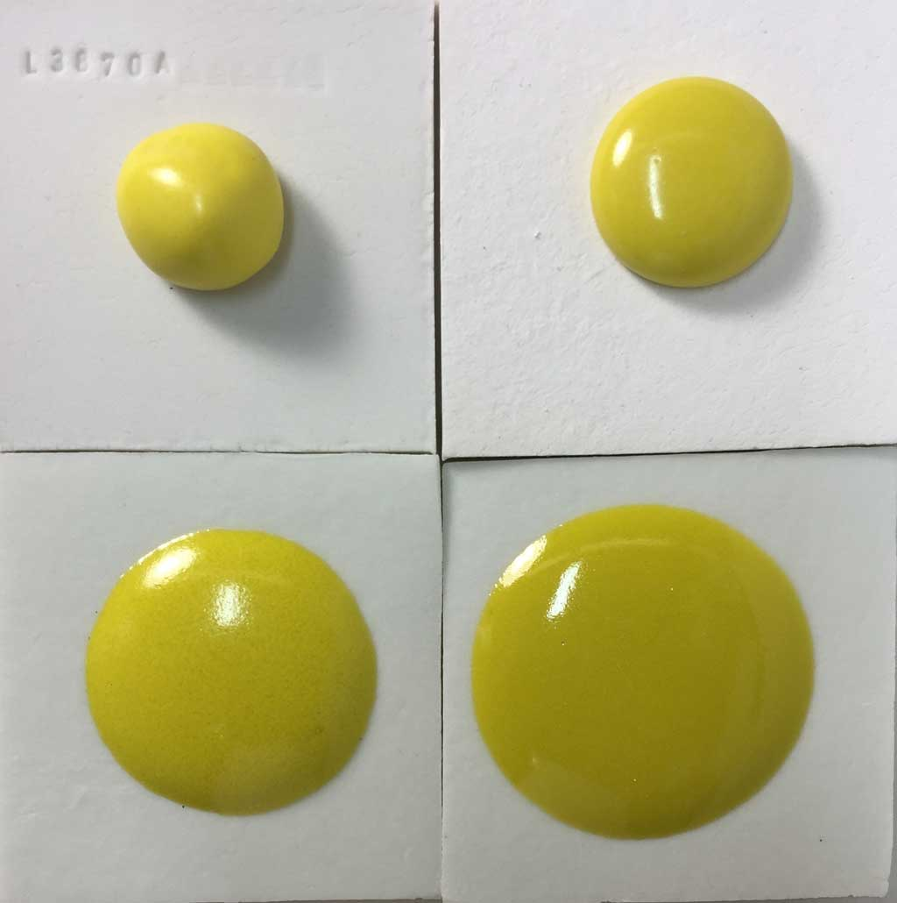
This picture has its own page with more detail, click here to see it.
These are 10 gram GBMF test balls that we melted on porcelain tiles at cone 4 (top two) and cone 6 (bottom two). They compare the melt fluidity of G2934 (left) and G2934Y (right). The Y version sources its MgO from frit and talc (rather than dolomite). It is a much more fluid melt because the frit is yielding the oxides more readily. But Y has a key benefit: It has a much lower LOI, producing fewer entrained air bubbles and therefore fewer surface defects. And, even though it runs much more, it has the same matte surface! As long as it is applied at normal thickness, the extra melt fluidity does not cause any running. And it has another benefit: Less cutlery marking issues. It is actually a very durable and practical food surface glaze, having a low thermal expansion that fits almost any body. Although these appear glossy here, on ware they have the identical pleasant silky matte surface.
Tuning the degree of gloss on a matte black glaze:
It's about more than just surface character
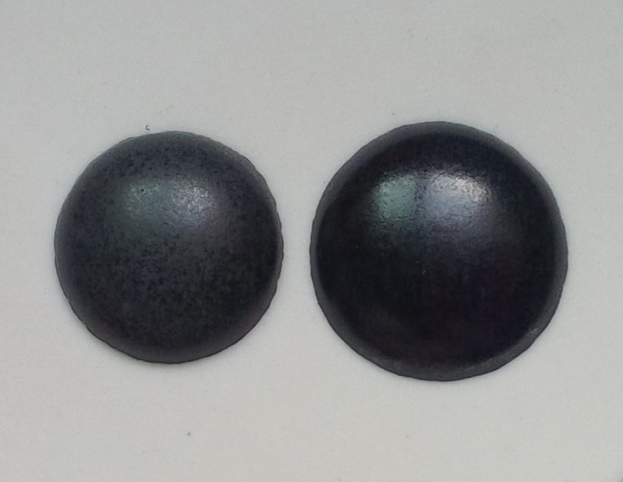
This picture has its own page with more detail, click here to see it.
These 10-gram balls were fired and melted down onto a tile. The one on the left is the original G2934 Plainsman Cone 6 magnesia matte with 6% Mason 6600 black stain. It has been a little too matte (and thus cutlery marking). On the right, the adjustment has a 20% glossy G2926B glaze addition to make it less matte. Notice the increased flow (the ball has flattened more). In addition, while the percentage of stain in the one on the right is actually less, the color appears darker because the more homogeneous glass allows more light penetration and less scattering.
My goal in making it glossier was to make it less prone to cutlery marking. The marking does not happen because the glaze is soft, but because the metal is abraded by microscopic surface roughness. Interestingly, I recovered the degree of matteness by slowing the cooling cycle, letting the kiln create a truer surface texture instead of forcing it through chemistry alone.
The matteness of this glaze depends on the cooling rate
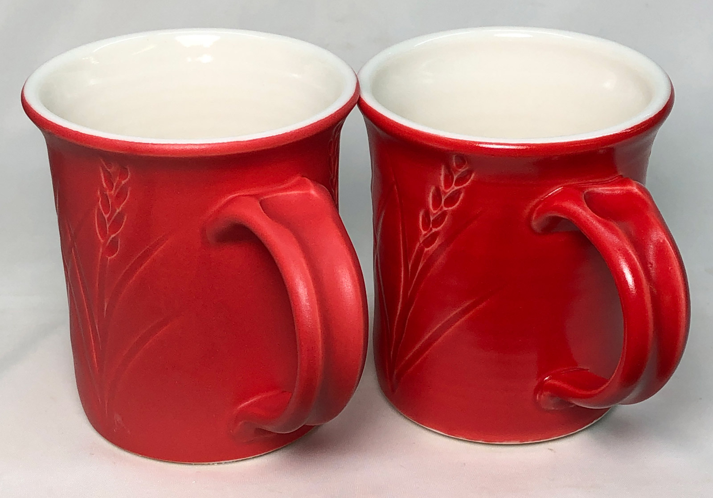
This picture has its own page with more detail, click here to see it.
This is the G2934Y matte cone 6 recipe with a red stain (Mason 6021). The one on the left was fired using the C6DHSC slow-cool schedule. The one on the right was fired using the drop-and-soak PLC6DS schedule. The only difference in the two schedules is what happens after 2100F on the way down (the slow-cool drops at 150F/hr and the other free-falls). For this glaze, the fast cool is much better, producing a silky pleasant surface rather than a dry matte.
Cooling rate drastically affects the appearance of this glaze
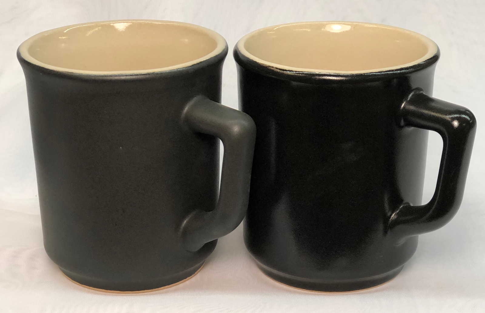
This picture has its own page with more detail, click here to see it.
This is the G2934Y satin matte glaze recipe with Mason 6600 black stain (6%). The piece on the left was fired using the C6DHSC firing schedule (drop-and-hold at 2100F then 150F/hr to 1400F). The one on the right was fired using the PLC6DS schedule (drop-and-hold at 2100F then free-fall from there). The slow cooling rate gives the glaze on the left time to crystallize, creating a stony matte (and altering the colour accordingly). My kilns are generally lightly loaded, so free-fall firings drop rapidly, producing the effect on the right. This phenomenon is a characteristic of high MgO glazes (ones having significant dolomite, talc, Ferro frit 3249). To vary, by recipe, the degree of matteness, we also make this glaze using a blend of G2934 base (which fires even more matte on slow-cool) and G2926B glossy (starting with and 80:20 matte:glossy mix). Of course, this type of glaze would not be practical in an industrial shuttle kiln, pieces would fire differently depending upon their placement on the cars.
Two cone 6 black glaze recipes I control and adjust
A gloss and a matte based on two reliable base recipes
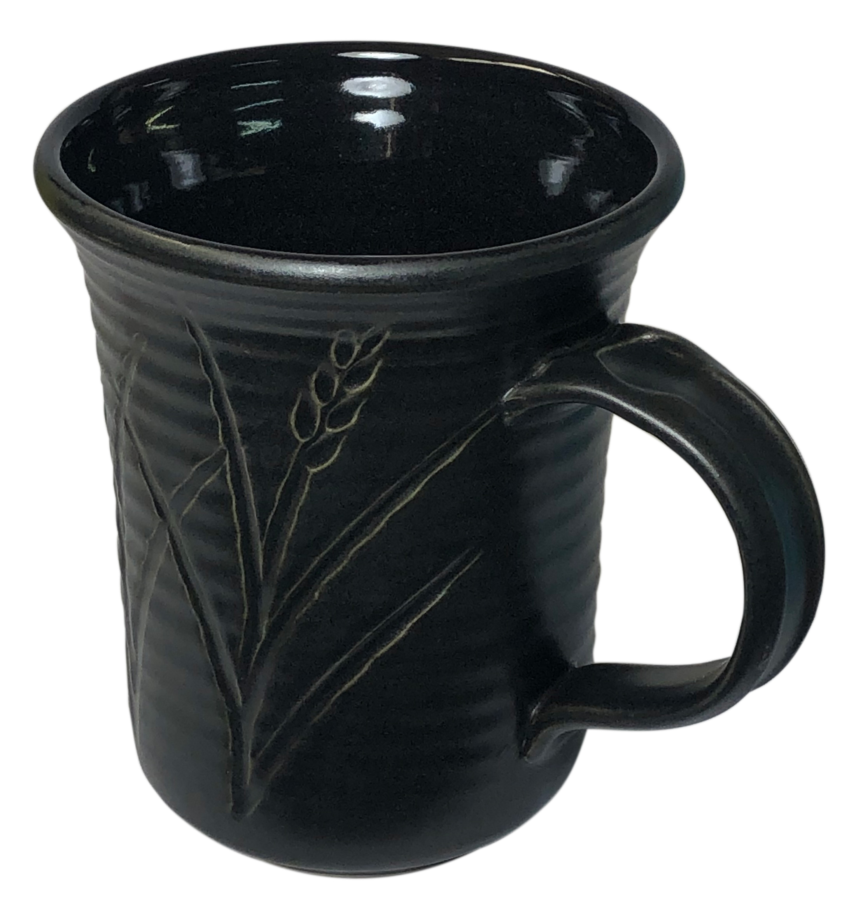
This picture has its own page with more detail, click here to see it.
The clay is Plainsman M370. Fired at cone 6 using the PLC6DS drop-and-hold firing schedule. The inside glossy glaze is G2926BL. The outside glaze base is G2934BL matte. Both recipes contain 6% Mason 6600 black stain. G2934 is tricky to keep consistent because the matte surface is a product of both the chemistry and the firing schedule. Thus, we faced lots of testing when it became necessary to substitute Ferro Frit 3124 for the supposed equivalent, Fusion Frit F-19. Early results showed a little better melting, so the 10-15% glossy we normally add to move the stony matte toward satin is not needed. However, we still made an 85:15 batch for our more frequent slow-cool C6DHSC firings (otherwise this G2934 mug would have fired too matte). So with the two recipes and two schedules, I can produce four surfaces, from gloss satin to stony matte. Digitalfire was the first online source of a matte black functional glaze with tunable matteness.
An ordinary white mug: More difficult to make than you think!
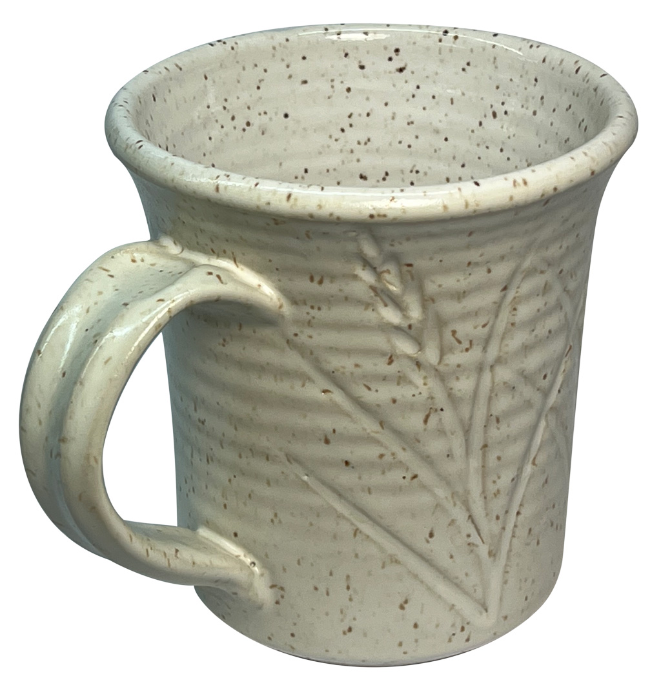
This picture has its own page with more detail, click here to see it.
This is M340S with G2934 matte white outside and G2926B glossy white inside (both have 10% zircopax). Consider what can go wrong. Zircon glazes love to crawl. I either add CMC gum to make it a base coat (or use a combination of tin oxide and zircopax (like G3926C). The clay has granular manganese added to produce the speck, if accidentally over-fired, even half a cone, it will bloat. And the clay body: The outer glaze is ugly on dark-burning clays. And it is drab on porcelains. It does not even look good on this same body if the speckle is not there. Another difficulty: Controlling the degree of matteness. I blend in about 20% of the glossy, otherwise it would fire too matte. And the firing schedule: PLC6DS - its drop-and-hold step is critical, without it the surface would be full of pinholes. Another problem: If the kiln is heavily loaded and cools slower than the programmed ramp-down, the surface will be too matte. Finally, glaze thickness: If it is too thin it will look washed out and ugly. Too thick it will bubble and look pasty.
The power of calcined alumina to matte a magnesia glaze
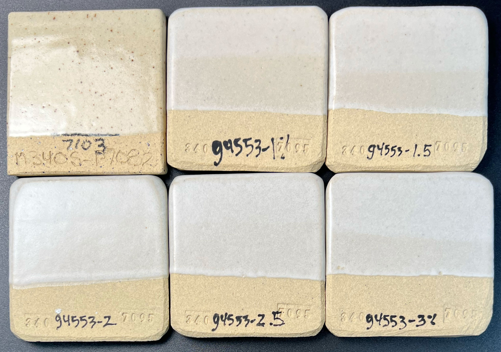
This picture has its own page with more detail, click here to see it.
This production batch of G2934 cone 6 magnesia matte glaze is firing almost glossy (upper left). Matte glaze chemistries are generally sensitive - big variations in surface character can result from small changes in firing or material chemistry/physics. This recipe relies both on high MgO and lots of Al2O3 (from high dolomite and kaolin in the recipe). A change in the frit has crossed a tipping point. But there is an amazing fix: A small addition of super fine calcined alumina (400 mesh). How small? only 1%! A small change in the frit turned it glossy so this small change has fixed it. Another factor is that greater additions of alumina (shown here are 1.5, 2.0, 2.5, and 3.0%) progressively matte it more (the slow-cool C6DHSC firing is the reason for the opacity). If the alumina was not dissolving, we would expect cutlery marking and surface staining. But neither is happening, even with additions of up to 8%, achieving stony matteness.
Inbound Photo Links
|
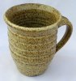 Ravenscrag Slip based dolomite matte |
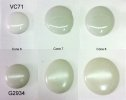 Is the V.C. 71 pottery glaze a true matte? |
Links
| Recipes |
G1214Z1 - Cone 6 Silky CaO matte base glaze
This glaze was born as a demonstration of how to use chemistry to convert a glossy cone 6 glaze into a matte. |
| Recipes |
G2934 - Matte Glaze Base for Cone 6
A base MgO matte glaze recipe fires to a hard utilitarian surface and has very good working properties. Blend in the glossy if it is too matte. |
| Recipes |
G2571A - Cone 10 Silky Dolomite Matte glaze
A cone 10R dolomite matte having a pleasant silky surface, it does not cutlery mark, stain or craze on common bodies |
| Recipes |
GR10-C - Ravenscrag Cone 10R Silky Talc Matte
Just Ravenscrag Slip plus 10% talc produces a visually variegated surface that feels silky and looks stunning! |
| Recipes |
G2928C - Ravenscrag Silky Matte for Cone 6
Plainsman Cone 6 Ravenscrag Slip based glaze. It can be found among others at http://ravenscrag.com. |
| Recipes |
G2000 - LA Matte Cone 6 Matte White
A silky zinc-fluxed matte used historically across North America |
| Glossary |
Cutlery Marking
Ceramic glazes that mark from cutlery are either not properly melted (lack flux), melted too much (lacking SiO2 and Al2O3), or have a micro-abrasive surface that abrades metal from cutlery. |
| Glossary |
Phase Separation
Phase separation in glaze melts creates microscopic discontinuities that affect transparency, color variegation, matte surfaces, and reactive glaze effects. |
| Glossary |
Silica:Alumina Ratio
A formula ratio used to evaluate and predict firing properties in ceramic glazes. |
| Glossary |
Glossy Glaze
|
| Glossary |
Alkaline Earths
Refers to a group of ceramic fluxing oxides that contribute similar properties to fired glazes. They contrast with the alkalis which are stronger fluxes. |
| Glossary |
Magnesia Matte
Magnesia matte ceramic glazes are “microstructure mattes” while calcia mattes are “crystal mattes”. They have a micro-wrinkle surface that forms from a high viscosity melt and microscopic phase separation, both of which prevent levelling on freezi |
| Glossary |
Crystallization
Ceramic glazes form crystals on cooling if the chemistry is right and the rate of cool is slow enough to permit molecular movement to the preferred orientation. |
| Glossary |
Reactive Glazes
In ceramics, reactive glazes have variegated surfaces that are a product of more melt fluidity and the presence of opacifiers, crystallizers and phase changers. |
| Glossary |
Ceramic Glaze
Ceramic glazes are glasses that have been adjusted to work on and with the clay body they are applied to. |
| Materials |
Dolomite
An inexpensive source of MgO and CaO for ceramic glazes, also a highly refractory material when fired in the absence of reactant fluxes. |
| Materials |
Wollastonite
|
| Materials |
Zinc Oxide
A pure source of ZnO for ceramic glazes, it is 100% pure with no LOI. |
| Materials |
Light Magnesium Carbonate
A refractory feather-light white powder used as a source of MgO and matting agent in ceramic glazes |
| Materials |
Barium Carbonate
A pure source of BaO for ceramic glazes. This is 77% BaO and has an LOI of 23% (lost at CO2 on firing). |
| Projects |
Properties
|
| Properties | Glaze Matteness |
| Typecodes |
Matte Glaze Recipes
Much less common that glossy glazes, normally have stricter firing requirements. |
| Articles |
A Textbook Cone 6 Matte Glaze With Problems
Glazes must be completely melted to be functional, hard and strong. Many are not. This compares two glazes to make the difference clear. |
| Media |
How I Formulated G2934 Cone 6 Silky MgO Matte Glaze Using Insight-Live
I will show you how found a recipe on Facebook, assessed it, substituted my own materials, tested it, adjusted it. |
 PayPal | No tracking, No ads, No paywall, No transient content! Just organized, concise information constantly updated and improved. Was this helpful? Consider supporting me. |
| By Tony Hansen Follow me on        |  |
Got a Question?
Buy me a coffee and we can talk 

https://digitalfire.com, All Rights Reserved
Privacy Policy